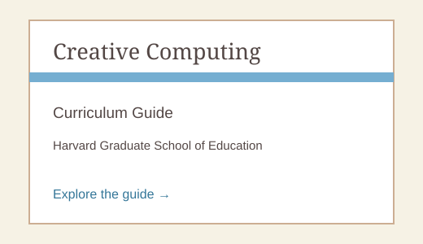

Teaching Scratch
Introduction
Video Resources
Creative Computing
The Creative Computing guide is a great way to learn more about teaching Scratch.
Click the picture to learn more.

Questions
Ask questions related to teaching Scratch in the dedicated section of our forums page.
Go